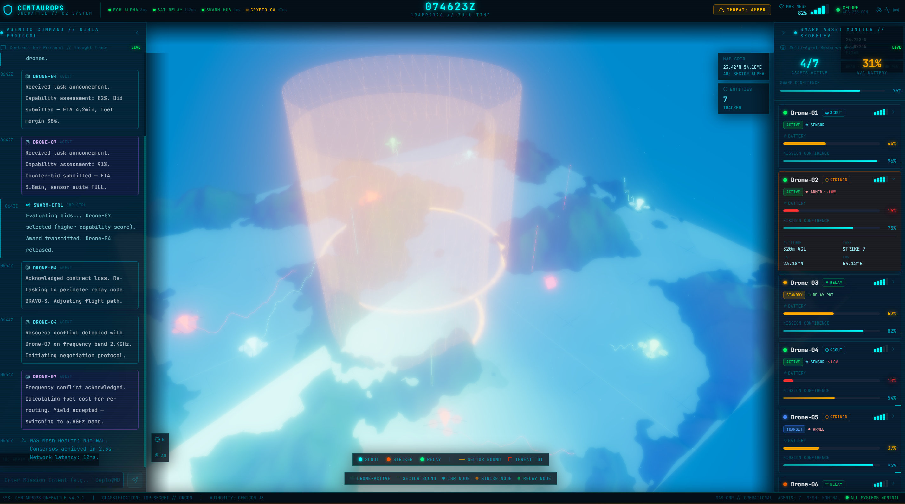

CentaurOps OneBattle utilizes Ontology-Customizable Multi-Agent Planning to bridge the gap between human fury and machine precision. Defining the Emergent Intelligence of the modern Intelligent Battle Management System.

Proprietary Cognitive Stack
Utilizing Adaptive Real-Time Resource Management, OneBattle constructs a dynamic Knowledge Base of the enterprise environment. Drones are initialized with a Digital Twin of the Mission, allowing for Emergent Collective Decision Making.
Powered by Proprietary Orchestration Patterns, we solve the "Black Box" of autonomy. Through Capability Discovery and Trajectory Metrics, human operators maintain High-Fidelity Interruptibility.